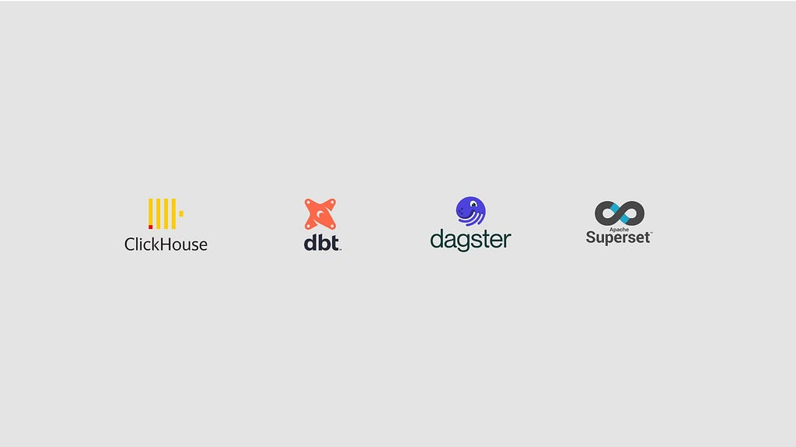
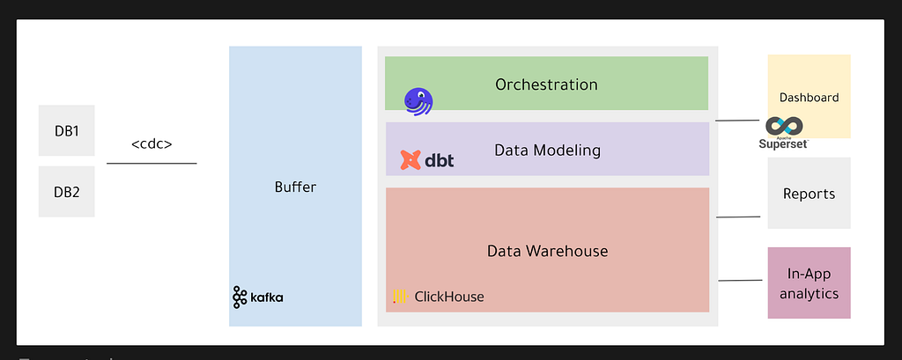

In this article we will go through Tweeq data platform journey starting from requirements that led to certain design choices and the lessons we learned while maintaining the platform on production.
Requirements:
We had some technical and regulatory requirements we needed to consider before sketching Tweeq data platform architecture:
- The data platform should be hosted within the region to comply with regulatory requirements.
- The data platform should be cloud agnostic for future cloud provider migration.
- The data platform should be optimised for analytical usage, including: customer-facing/in-app analytics and Business intelligence (BI)/ Data analytics.
- The data platform should utilise open-source tools.
- The data platform should be highly available and support data replication by storing data in multiple nodes.
- The data platform should achieve some level of observability.
Data platform architecture:
This section discusses Tweeq production system, our overall data stack, design choices, and the lessons we learned throughout the journey.

Tweeq Production System:
Tweeq follows microservices architecture, which means that data is distributed across service-level databases, which make joining the tables for any customer-facing features an expensive operation, thus the choice to relay in the data warehouse for any feature that requires data join/aggregation.
Data Warehose Storage — Clickhouse:
Since some views needed to be used for customer-facing features, column store databases were our first choice.
AWS & GCP tools such as Redshift & BigQuery were out of question, due to the fact that we are obligated to store the data within the region, yet Tweeq needed to be ready for future cloud migration. Clickhouse checked all the boxes we need. Moreover, by using Altinity ClickHouse K8s Operator we managed to build a cloud agnostic data warehouse.
EtLT Approach — Kafka:
Tweeq data platform uses an EtLT (Extratct, transform -with small t-, Load, Transform) approach. This means we ship the raw data without any manipulation except for discarding some PII (Personal Identifiable Information) data.
The data get pushed from our production CockroachDB databases to a Kafka cluster, a buffer layer. This is achieved by utilizing the Change Data Capture (CDC) and changefeed jobs provided -out of the box- by CockroachDB.
Clickhouse by design provides Kafka table-like consumers, called Kafka Engine tables. This helped us avoid using any third-party sink tools. However, one of the main limitations of Kafka Engine tables is managing schema changes, dropping and recreating the tables manually without down time can be a hectic process.
Data Modeling — dbt:
In order to provide the data in the right format, we decided to model the data warehouse by following the dimensional modelling (facts & dimensions) approach. We modeled the data into facts, dimensions and data marts (pre-computed, pre-aggregated tables) for customer-facing features and for BI purpose, however the data analysts has the freedom to create their own data marts
The data modelling was achieved by dbt. We utilised the incremental load feature that dbt provides to ensure the freshness of the fact and dimension models. We utilised the seeds functionality to create a local mock for testing purposes.
Although dbt is powerful, developer-friendly, and helps ensure that queries are version-controlled, we faced issues with having dbt write to a Clickhouse cluster. We had to make some compromises by storing the data in one node, which was later fixed in newer dbt versions.
Pipelines Orchestration — Dagster:
We needed to schedule our customer-facing models (facts, dimensions and data marts) to be updated every 5 minutes, and for our data warehouse models to be updated at least once a day.
We were able to achieve that by using Dagster. We picked Dagster because it is an orchestration tool that is developed specifically for data pipelines, integrates super smoothly with dbt, can be deployed on top of K8s, has a data linage feature, and an easy to use UI.
We used the tags feature to separate dashboard specific freshness intervals. We used sensors to monitor the failure of developed pipelines, where the failure messages get pushed to a Slack channel.
The only downside of Dagster is the initial set up part on k8s, however the community is super helpful and responsive.
Data Visualisation — Superset:
We chose Superset because it is an open-source tool that can be deployed on top of K8s. Moreover, it can be integrated with GoogleAuth for user management.
The UI can be intimidating at first glance, and while the visualisation options are good enough, we also needed to use product analytics tools such as Posthog for more product-oriented analytics.
Finally, hope you enjoyed the article as much as we enjoyed the journey of building Tweeq data platform. Feel free to comment and drop a message.
Special thanks to Abdulaziz almalki, Mashail Almuzaini and Reem Albiridi.
Tweeq Data Platform: Journey and Lessons Learned: Clickhouse, dbt, Dagster, and Superset was originally published in Tweeq Engineering on Medium, where people are continuing the conversation by highlighting and responding to this story.